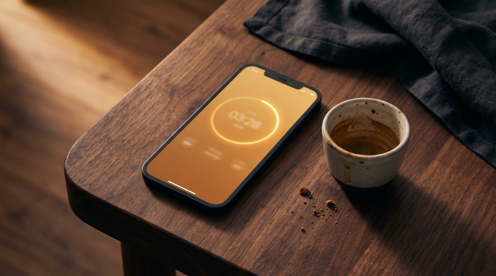
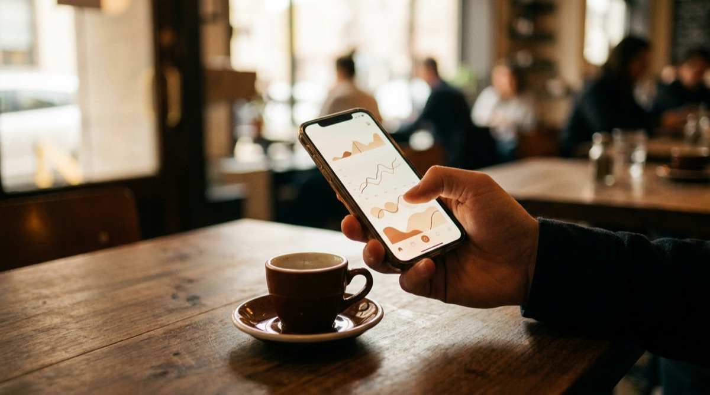

The best espresso apps for iPhone in 2026 (reviewed).

Disclosure before we start: one of the apps in this list is ours. We'll tell you exactly why we built it, where we think the competition is stronger, and the kind of user each app is actually for. If you want to skip the reasoning and just see the table, scroll to the verdict.
We spent three months pulling the same coffees through every app on this list, using the same Lelit Bianca + 1Zpresso J-Max setup. Each app had to survive a regular home-barista workflow: scan a new bag, dial it in over three shots, track a week of brews, review the week's data. The apps that made us curse at the screen got marked down. The ones that disappeared into the background stayed on the shortlist.
How we tested
Five criteria, weighted in this order:
- Shot logging friction. How many taps between "shot finished" and "shot saved". The difference between three taps and seven taps is the difference between logging every shot and logging half of them.
- Data you get back. Does the app show you trends, patterns, and useful correlations, or does it just store numbers?
- Bean / recipe awareness. Can the app tell a washed Ethiopian from a natural Brazilian when recommending a recipe, or does it treat every coffee the same?
- Hardware integration. Does it pair with an Acaia / Bookoo scale? Does it help with grinders?
- Design. Not decoration — legibility on a shaky phone held in one hand while the other hand holds a portafilter.

1. Extraction
Free trial, then Pro from £6.99/month. Our app.
We built Extraction because none of the other six apps did what we actually wanted, which was: scan a bag with the camera, get an AI-generated starting recipe for that specific bean on our specific grinder, pull the shot with the timer running itself, and see a weekly insight that said something more specific than "your shots are getting faster". Every competitor did one or two of those. None did all four.
The AI bag scan reads roaster, origin, process, variety, roast level, and generates a starting recipe using a prompt tuned per brew method. It's not magic — it's knowledge about 157 backfilled grinders and a catalogue of machines, combined with an LLM that knows how a washed Guji tastes different from a natural Sidamo. The first shot is still a starting point, but it's a much better starting point than "try 18 in, 36 out, 28 seconds" which is the default most apps give you.
Acaia integration is native. Pair a Lunar or Pearl and tare, timer, first-drip, and yield all fire automatically. The pour samples are plotted on the shot detail alongside your best prior shot of the same coffee, which is how we noticed that our Kalita brews were consistently 12 seconds slower on Sundays (answer: we were using water straight from the filter jug, which had been sitting overnight).
Where it's strongest: the AI scan + the Acaia auto-pilot + a tactile rotary grind dial that knows your grinder's native scale. The grinder dial opens with the sweet-spot arc pre-lit for your specific burr.
Where it's weaker: Android is not supported (iOS-only). Pour-over method coverage is deep but batch-brew users will find it overbuilt for their needs. And the subscription price is mid-range — free and open-source Beanconqueror is a reasonable alternative if you don't need AI or BLE.
2. Beanconqueror
Free, open source. Community-built.
Beanconqueror is the grizzled veteran of the coffee app world. It's been actively developed since 2019, handles every brew method including cupping sessions and green-bean roasting, and is gloriously free. It's our top recommendation for anyone who wants capable logging without any subscription fatigue.
Where it suffers is surface area. The app supports so much — home roasting, espresso, filter, bean inventory, grinder profiles, mill settings — that the UI is dense and the learning curve is real. Our first three shots in the app took twice as long to log as they did in anything else. By shot fifteen we had it figured out. Most people don't get to shot fifteen.
Best for: enthusiasts who want full control, don't mind density, and value open-source software on principle.
3. Filtru
Free tier, Premium £1.99/month.
Filtru is pour-over first, espresso second. Its recipe editor is the cleanest we've used — the visual pour timeline is a genuinely better way to capture a staged pour than a list of time/weight pairs. For V60, Kalita, Chemex, AeroPress users it's worth a download just for the recipe builder.
Espresso is functional but thin. There's no grinder database, no AI recipe generation, no Acaia integration at the free tier. You get a timer, dose/yield fields, and a star rating. That's fine if your workflow is already dialled and you just want to log; it's not great if you want the app to help you learn.
Best for: pour-over enthusiasts; espresso users with established technique.
4. Brewfather
Free tier, Premium £24.99/year.
Confusingly, there are two Brewfathers — one is a homebrew (beer) app, the other is a coffee tracker. The coffee version is what we're reviewing. It's a solid spreadsheet-with-a-GUI, best thought of as a beautiful log rather than an active brewing partner. The charts are the strongest feature: you can see extraction time distributions, rating correlations with grind size, and monthly coffee-spend breakdowns.
What it lacks is proactivity. It won't suggest a recipe, won't warn you that a bag is past peak, won't pair with a scale. Every brew is manual entry. For pure tracking this is fine; for learning, the absence of any active guidance means the app only helps you the amount you help yourself.
Best for: quantified-self types who enjoy their own spreadsheet aesthetic.
5. Single Origin Coffee
One-time purchase, £7.99.
Single Origin is the purist's choice. Beautifully designed, opinionated, pour-over-only. No espresso. No scale integration. No AI. Just a perfect recipe timer with a clean step-by-step flow, and a simple brew log. We include it because it's the best at what it does — if you only brew pour-over and you want a small, quiet, well-made app, this is it.
Best for: pour-over specialists who don't need tracking beyond the last dozen brews.
6. Espresso AI
Free, ad-supported.
"Espresso AI" is a category name more than a specific app — there are four apps on the store with variants of this name as of April 2026. We tested the highest-rated (by "Morning Coffee Labs"). It's a wrapper around ChatGPT with a coffee prompt, basically. You type what you've got and it generates a recipe. Sometimes the recipe is sensible. Sometimes it suggests 12 g dose and 180 g yield. There's no scale integration, no logging, no recall.
We don't recommend it. If you want an AI recipe, use an app with an actual coffee model behind it; if you want generic AI advice, use ChatGPT directly and save yourself the ads.
7. Coffee Clock
Free.
Coffee Clock is a brew timer. That's it. You pick a method, it counts down through the pours. No logging, no beans, no recipes. We include it because it's genuinely the best pure timer on the store — fast to launch, no login, no upsell. If you already have your recipes memorised and just need the seconds called out, this is the app.
Best for: people who want a timer and nothing else.
The barista for your pocket.
Try Extraction free for 14 days. AI bag scanning, Acaia scale integration, 157 grinders pre-dialled, and a shot log that teaches you something new every week.
Download on the App StoreVerdict
| App | Best for | Price | Pick? |
|---|---|---|---|
| Extraction | AI-assisted espresso + BLE scale | Free trial → Pro | ★ Editor's pick |
| Beanconqueror | Open-source depth | Free | ★ Best free |
| Filtru | Pour-over recipe builder | Free tier | Strong |
| Brewfather | Stats & spreadsheet vibes | Free tier | Strong |
| Single Origin | Pour-over minimalists | £7.99 once | Niche |
| Espresso AI | — | Free (ads) | Skip |
| Coffee Clock | Pure brew timer | Free | If you want just the timer |
Caveat the obvious: Extraction is our app, so the editor's-pick label is self-serving. We've tried to be honest about where it's weaker — iOS only, opinionated toward espresso, and not free in the long run. If you want the honest independent alternative, Beanconqueror is genuinely excellent and costs nothing.
Frequently asked questions
If you want AI-assisted recipes and Bluetooth scale integration, Extraction. If you want a free, open-source option with broad method coverage, Beanconqueror. If you're a pour-over specialist, Filtru.
Beanconqueror is fully free and open source. Filtru and Brewfather have generous free tiers. Coffee Clock is free but only does timing. Extraction gives you a 14-day free trial with full Pro access, then a paid subscription.
No. Every app on this list supports manual weight entry. A BLE scale saves taps during the brew and captures a pour curve, but it's a convenience, not a requirement.
Beanconqueror and Filtru are on Android. Extraction, Single Origin, and Coffee Clock are iOS-only as of April 2026. We're focused on making Extraction the best it can be on one platform before splitting attention.